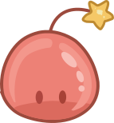
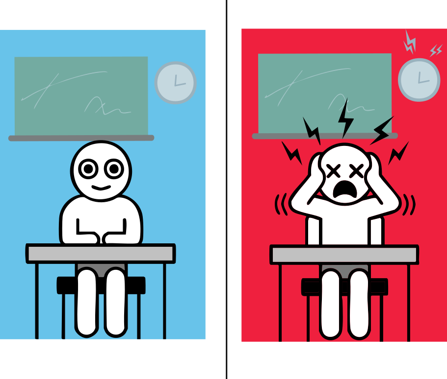
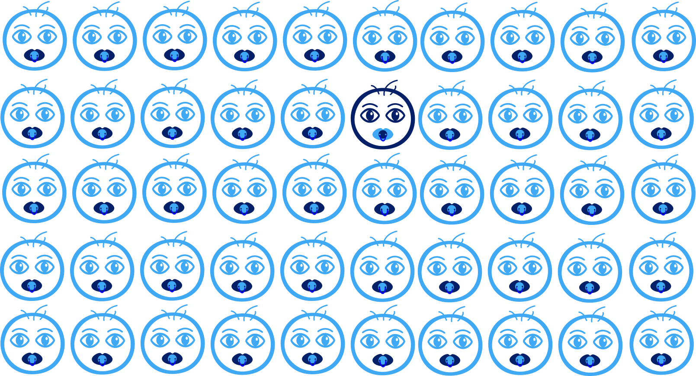

Reconnaissance des Émotions Faciales
Une étude sur le Trouble du Spectre Autistique
Découvrez comment les personnes avec TSA perçoivent et interprètent les expressions faciales à travers une expérience de recherche innovante utilisant l'eye-tracking et l'analyse comportementale.
Contexte Scientifique
Comprendre le Trouble du Spectre Autistique et les enjeux de la recherche
Le Trouble du Spectre Autistique (TSA) est un trouble neurodéveloppemental qui affecte la communication sociale, les interactions et les comportements.
Communication
Difficultés dans les échanges verbaux et non-verbaux
Interactions sociales
Défis dans la compréhension des codes sociaux
Comportements
Intérêts restreints et comportements répétitifs
Les Troubles du Neurodéveloppement (TND) apparaissent durant l’enfance et affectent le développement du système nerveux.
- Trouble du Spectre Autistique (TSA)
- TDAH
- Troubles spécifiques des apprentissages
- Déficience intellectuelle
1%
de la population
600K
personnes en France
×4
plus fréquent chez les garçons
Ces chiffres sont en constante évolution grâce à une meilleure détection et compréhension du trouble.

Les personnes avec TSA perçoivent les stimulis différemment.
1 enfant sur 100 est diagnostiqué avec un TSA.L'Expérience de Recherche
Une étude approfondie sur la reconnaissance des émotions faciales chez les personnes avec TSA
Objectifs de l'étude
Cette étude vise à comprendre comment les enfants avec un trouble du spectre de l’autisme (TSA) explorent visuellement des visages, grâce à la technologie d’eye-tracking.
En comparant leur comportement visuel à celui d’enfants au développement typique, les chercheurs cherchent à identifier des indicateurs visuels pouvant aider au dépistage précoce de l’autisme.
Objectif principal
Identifier les différences dans l’exploration visuelle des visages entre les enfants avec TSA et les enfants au développement typique, afin de repérer des marqueurs visuels discriminants.
Objectifs secondaires
- Mesurer le temps passé à regarder différentes zones du visage (yeux, bouche, tête, écran)
- Analyser le nombre et la durée des fixations visuelles
- Étudier la latence avant de regarder une zone du visage
Animation de présentation de l'eye-tracking
Méthodologie
Technologie Eye-Tracking
Nous avons utilisé un oculographe (eye-tracker) pour enregistrer la position du regard des enfants pendant qu’ils observaient des visages affichés sur un écran. Cette technologie permet de mesurer objectivement ce que regarde un participant, pendant combien de temps et à quel moment.
Stimuli visuels
Les participants ont observé quatre visages neutres (deux garçons et deux filles). Chaque visage était présenté pendant 4 secondes, pendant lesquelles les mouvements oculaires étaient enregistrés.
Zones d’intérêt
Les analyses se concentrent sur quatre zones principales : l'écran, la tête, les yeux et la bouche.
Zones d'intérêt analysées
Participants
Groupe TSA
Groupe Témoin
Déroulement de l'expérience
Accueil et calibration
L’enfant est installé devant l’écran et l’appareil est calibré pour suivre précisément son regard.
Phase expérimentale
Chaque enfant observe quatre visages neutres pendant 4 secondes chacun.
Enregistrement des données visuelles
L’eye-tracker mesure le temps de fixation, le nombre de fixations et la latence pour chaque zone du visage.
Analyse des données
Les données sont comparées entre les enfants TSA et les enfants au développement typique pour identifier des différences significatives.
Vidéos du déroulement
Test Homme1
Test Homme2
Test Femme1
Test Femme2
Résultats et Visualisations
Explorez les données de l'expérience en sélectionnant un visage et un paramètre d'analyse.
Comment utiliser cette interface ?
- Étape 1 : Sélectionnez un visage parmi les 4 proposés.
- Étape 2 : Choisissez une zone (écran, visage, yeux, bouche).
- Étape 3 : Choisissez un paramètre (temps total traqué, ).
- Étape 4 : Visualisez les résultats.
1. Choix du visage
Visage 1
Visage 2
Visage 3
Visage 4
2. Choix de la zone à analyser
Écran
Visage
Œil
Bouche
3. Choix du paramètre d'analyse
Temps Total Trackés
Durée totale pendant laquelle le regard est suivi.
Latence
Temps avant le premier regard vers la zone.
Temps passés
Temps cumulé passé dans la zone.
Temps Fixation
Durée moyenne des fixations sur la zone.
Nombre de fixation
Nombre total de fixations dans la zone.
Nombre entrée Zone
Nombre de fois où le regard entre dans la zone.
Visualisation des résultats
L'image et le graphique ci-dessous changent en fonction du visage, de la zone et du paramètre sélectionnés.